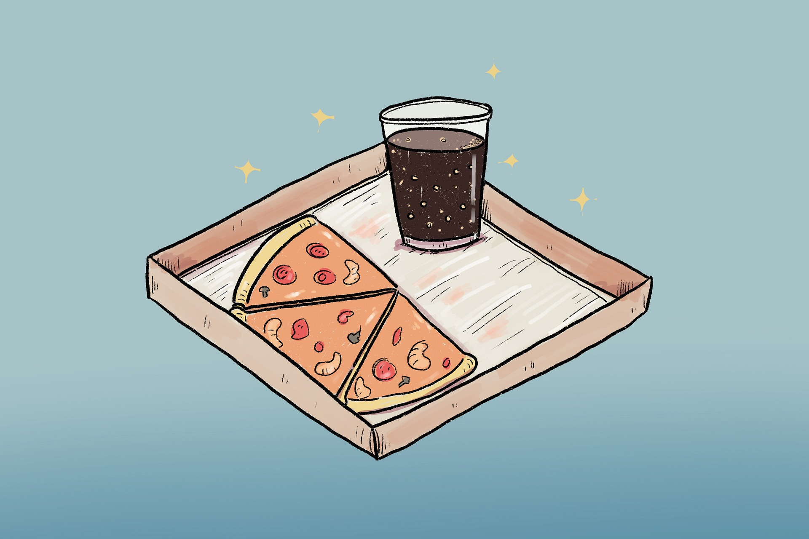

Hummus Pizza

An excellent pizza <3
Ingredients
- 1 (10 ounce) can refrigerated pizza crust dough
- 1 cup hummus spread
- 1 ½ cups sliced bell peppers, any color
- 1 cup broccoli florets
- 2 cups shredded Monterey Jack cheese
Steps
- Preheat the oven to 475 degrees C (220 degrees C).
- Roll out pizza crust and place on a pizza pan or baking sheet. Spread a thin layer of hummus over the crust. Arrange sliced peppers and broccoli over the hummus, and top with shredded cheese.
- Bake in the preheated oven until the crust is golden brown and cheese is melted in the center, 10 to 15 minutes. Slice and serve.